Willkommen in der Online-Hilfe des Plugins, das zeigt, wie Signaturen und Zertifikate mit drei verschiedenen Gültigkeitsmodellen validiert werden:
Im Folgenden finden Sie einen Überblick zum Plugin sowie eine detaillierte Erklärung zu seiner Verwendung. Zum Schluss werden die Unterschiede der Gültigkeitsmodelle kurz erklärt.
Für die Aussage, ob eine Signatur als gültig erkannt wird, spielen mehrere Dinge eine Rolle – manche haben gar nichts damit zu tun, ob die Nachricht selbst verändert wurde oder nicht:
Alle 8 Zeitpunkte können mit Hilfe von Schiebereglern manipuliert werden, und danach erneut eine Überprüfung durchgeführt werden.
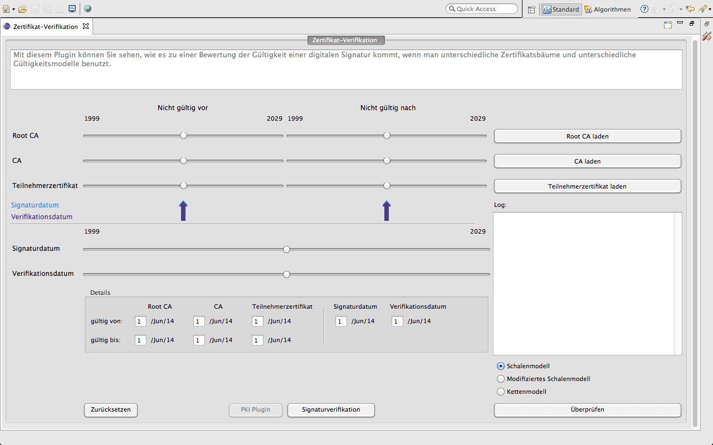
Das Plugin kann mit dem Klick auf die Ikone "Reset" oben rechts auf seinen Ursprungszustand zurückgesetzt werden. Alle vom User getätigten Änderungen werden verworfen.
Im Folgenden werden wir die Funktionen des Plug-ins anhand eines möglichen Durchlaufs beschreiben.
Das Plugin hat bei Starten gleich sinnvolle Werte für alle 8 Zeitpunkte eingestellt:
Root-CA: 1.7.10 - 1.3.32
CA: 1.1.13 - 1.9.29
Teilnehmer: 1.7.15 - 1.11.23
Signier-Zeitpunkt: 01.11.2018
Verifizier-Zeitpunkt: 01.07.2020
Alternativ können Sie die Zeitpunkte auch aus in JCT gespeicherten Zertifikaten laden. Beim Klicken auf die Buttons "Root CA Zertifikat laden", "CA Zertifikat laden" und "Teilnehmerzertifikat laden" öffnet sich jeweils ein Dialogfenster (siehe Abbildung) zum Auswählen des zu ladenden Zertifikats. In diesem Fenster wählen Sie das gewünschte Zertifikat in der Liste aus und klicken auf "Fertigstellen". Die Regler in der Oberfläche haben sich nun entsprechend der geladenen Zertifikate angepasst und die Schrift des Buttons zum Laden in der Hauptoberfläche ist jetzt grün. Bitte beachten Sie, dass die Veränderung der Schieberegler rein zur Anschauung dient. Das heißt, es werden weder die Zertifikate verändert noch werden neue erstellt.
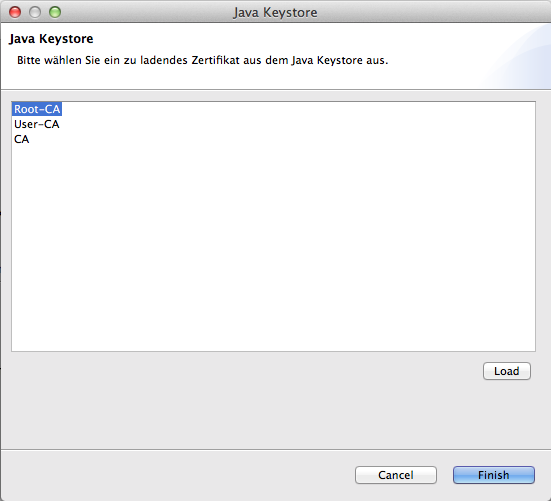
Wenn Sie alle drei Zertifikate (Root-CA, CA und Teilnehmer) erfolgreich geladen haben oder die voreingestellten Zeitpunkte einfach übernommen haben, wählen Sie, mit Hilfe der Radio-Buttons, nach welchem Gültigkeitsmodell Sie validieren möchten. Nun können Sie auf den Button "Überprüfen" drücken und erfahren, anhand der Symbole "X" (im roten Kreis) oder "Häkchen" (im grünen Kreis), ob die geladene Kette gültig ist oder nicht.
Im Log finden Sie alle Schritte, die Sie seit dem Starten oder Reseten des Plugins durchgeführt haben in Textform wieder.
Auswahl des Gültigkeitsmodells:
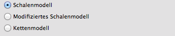
Erfolgreich validiert:
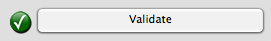
Erfolglos validiert:
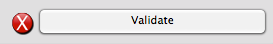
Log:
Zu Anschauungszwecken können Sie nun mit den Schiebereglern die Gültigkeitsdauer von jedem der Zertifikate sowie den Verifizierungs- und den Signierzeitpunkt manipulieren. Danach können Sie erneut eine Validierung mit dem Überprüfen-Button durchführen.
Mit Hilfe der Schieberegler werden nur die Monate angepasst. Damit Sie ein Tages-genaues Datum angeben können, gibt es in der Gruppierung "Details zu den Zeitpunkten" entsprechende Textfelder. Nach einer Manipulation mit den Schiebereglern wird die Schrift der Buttons "Root CA Zertifikat laden", "CA Zertifikat laden" und "Teilnehmerzertifikat laden" orange.
Die hellblauen Pfeile unterhalb der Schieberegler für die Gültigkeitsdauer der 3 Zertifikate zeigen das Signaturdatum und die violetten Pfeil zeigen das Verifikationsdatum.
Schieberegler:
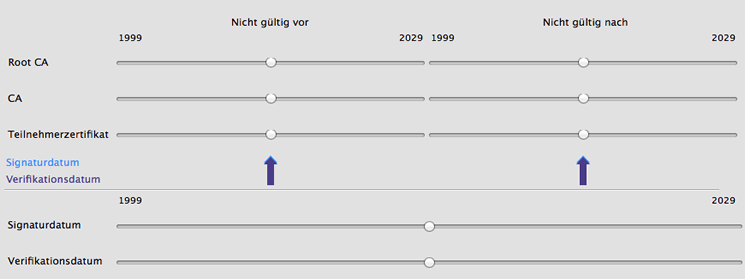
Details zu den Zeitpunkten:
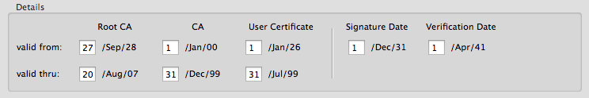
Gültigkeitsmodelle beschreiben, welche Eigenschaften zu welchen Zeitpunkten erfüllt sein müssen, um eine Signatur als gültig zu bewerten. Hier werden die drei am häufigsten verwendeten Gültigkeitsmodelle vorgestellt: das Schalenmodell, eine modifizierte Variante davon und das Kettenmodell.
Ein Schlüssel(-paar) ist unter Verwendung des Schalenmodells zu einem bestimmten Zeitpunkt genau dann gültig, wenn zu diesem Zeitpunkt der zugehörige Zertifizierungspfad gültig ist. Der Zertifizierungspfad ist zu einem bestimmten Zeitpunkt genau dann gültig, wenn alle in ihm enthaltenen Zertifikate zu diesem Zeitpunkt gültig sind.
Ein Zertifikat ist zu einem bestimmten Zeitpunkt genau dann gültig, wenn
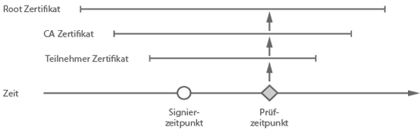
Das modifizierte Schalenmodell entspricht dem eben beschriebenen Schalenmodell mit der besonderen Randbedingung, dass für die Überprüfung eines Zertifikatspfades der Zeitpunkt der Dokumentsignaturbildung herangezogen wird und nicht wie im Schalenmodell der aktuelle Zeitpunkt der Prüfung. Dies wird normalerweise in Europa verwendet.
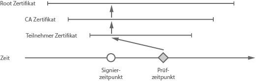
Im Kettenmodell wird nur gefordert, dass jedes Zertifikat im Zeitpunkt seiner Anwendung gültig war. Das bedeutet: Zum Signierzeitpunkt des Dokuments muss das Teilnehmer-Zertifikat gültig gewesen sein. Zum Zeitpunkt der Zertifizierung des Teilnehmer-Zertifikates muss das CA-Zertifikat gültig gewesen sein usw. Ob ein Zertifikat seit der Dokumentsignatur gesperrt wurde, bleibt in diesem Modell unberücksichtigt.
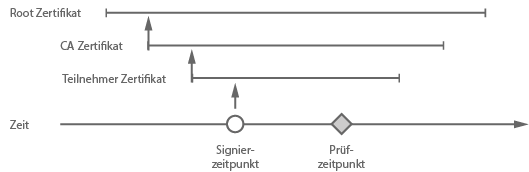

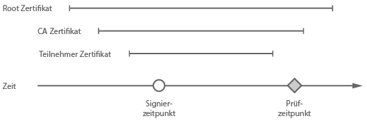

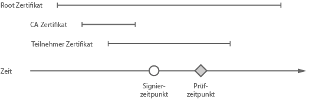
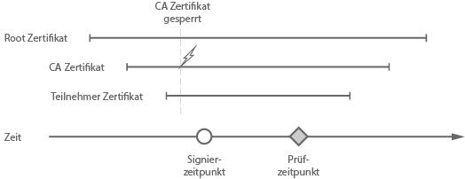
Man sieht also Folgendes: Abhängig vom Gültigkeitsmodell kann eine Signatur schon deshalb als ungültig gewertet werden, wenn der Verifizier-Zeitpunkt ein anderer ist. Verblüffend ist, dass auch wenn sich die zu prüfende Nachricht und die Signatur überhaupt nicht änderte, Sie heute eine gültige Signatur bescheinigt bekommen können und morgen eine ungültige. Das einfache Schalenmodell hat sich u.a. auch deshalb nicht durchgesetzt, da dies für den Nutzer unverständlich ist.